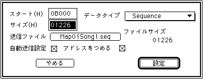

★SOUND Manual
★サウンドシュミレータマニュアル
★SOUND Manual
★サウンドシュミレータマニュアル
▲
戻る｜
進む▼
メニュー一覧
サウンドシュミレータマニュアル
■編集メニュー
- Edit メニューを開くと以下のような表示が出ます。
-
取り消し
- 一番最後に行った変更を無効にします。
データの制作
- ここを選択すると、次のダイアログボックスが開きます。

ここでマップ情報のデータを変更します。スタートアドレス・エリアサイズ・データタイプ・転送ファイル・オートロード指定を設定できます。転送ファイルを指定すると指定されたファイルのサイズがバイト数で表示されますので、エリアサイズの決定や変更の目安になります。
このメニューはEditWindowをダブルクリックすることで同様の能力が得られます。
新規データ
- カレントマップ上に新しいデータが追加されます。データタイプはデフォルトの「BANK data」か、Data Editのダイアログボックスで最後に選択したデータタイプで、サイズは 00000 となります。
マップの名前変更
- 各エリアごとのエリアマップにそれぞれ名称を付けることができます。エリア数が多い場合等にエリアを表すわかりやすい名称を設定できます。
データの削除
- 確認のメニューが表示され、ここで削除後のアドレスを更新するか現在のアドレスを存続させるかの選択ができます。削除されたデータは記憶され、直後の挿入操作で再度取り出すことができます。
データのコピー
- 現在選択されているデータが記憶されます。直後の挿入操作で取り出すことができます。
データの張付
- 現在記憶されているデータが張り付けられます。
データの挿入
- 現在記憶されているデータが挿入されます。挿入位置は現在選択されて反転表示しているデータの直前です。データが選択されていない場合は一番最後に追加されます。
データの内容の消去
- 現在選択されているデータの、データ種別以外がすべて消去されます。
アドレスを詰める
- 削除等で空いたアドレスをつめます。
マップ〜
- 上記同様の編集を、各データでなく、マップに対して行います。
▲
戻る｜
進む▼
メニュー一覧
★SOUND Manual
★サウンドシュミレータマニュアル
Copyright SEGA ENTERPRISES, LTD., 1997